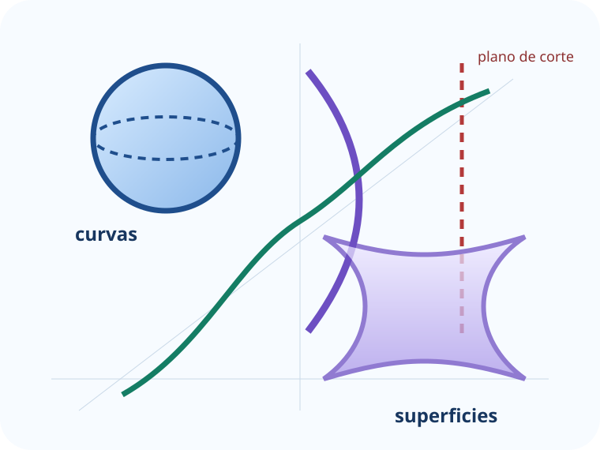
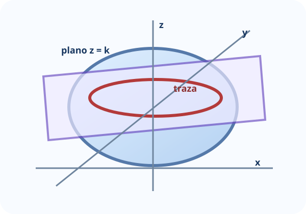
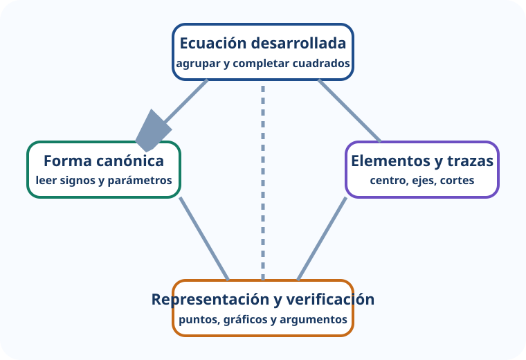

Reconocer
Comparar términos cuadráticos, signos, variables ausentes y términos lineales.
Cápsula de apoyo para el Trabajo Práctico N.º 7
Leer la geometría escondida en una ecuación de segundo grado
Un recorrido no lineal para reconocer, reducir, graficar y justificar cónicas y superficies cuádricas. Podés comenzar por el puente algebraico, entrar directamente a una cónica o recorrer las trazas de una superficie.
La bitácora y el progreso se guardan solamente en este dispositivo.

Pregunta central: ¿cómo anticipar la forma, la orientación y las trazas de un objeto geométrico a partir de su ecuación?
Antes de resolver
La propuesta organiza la teoría y los ejemplos del material de la cátedra en unidades breves. Cada pantalla combina una pregunta, una representación, una decisión matemática y una devolución inmediata. El objetivo no es memorizar una lista de formas, sino aprender a justificar por qué una ecuación representa determinada figura.
Comparar términos cuadráticos, signos, variables ausentes y términos lineales.
Usar completamiento de cuadrados para pasar de la forma desarrollada a la canónica.
Leer centros, vértices, focos, ejes, directrices, asíntotas y semiejes.
Pasar del espacio a curvas planas mediante los cortes x = k, y = k y z = k.
“¿Qué información geométrica aparece antes de hacer todas las cuentas?”
Elegí una entrada
Los cuatro nodos se conectan entre sí. Las cónicas y las cuádricas son los dos núcleos temáticos; el puente algebraico y el taller integrador ayudan a entrar y salir de ellos.
¿Cómo convertir una ecuación desarrollada en una forma que se pueda leer?
¿Qué condición de distancia define cada curva y cómo aparece en su ecuación?
¿Qué revelan los signos, la variable ausente y las trazas de una ecuación en tres variables?
Nodo con código docente
¿Podés reconocer, justificar y elegir un procedimiento antes de mirar la resolución?
Nodo 01
La lectura geométrica se vuelve más directa cuando cada bloque cuadrático aparece como un cuadrado perfecto.
Reuní los términos de cada variable y separá la constante.
Agregá y restá el valor necesario dentro de cada grupo.
Llevá la ecuación a segundo miembro 1 o a una forma equivalente.
| Patrón | Lectura inicial |
|---|---|
| Dos cuadrados con igual signo e igual coeficiente | Circunferencia o caso degenerado/imaginario. |
| Dos cuadrados con igual signo y coeficientes distintos | Elipse o caso degenerado/imaginario. |
| Un solo término cuadrático | Parábola. |
| Dos cuadrados con signos opuestos | Hipérbola o par de rectas. |
| En \(\mathbb{R}^3\) falta una variable | Superficie cilíndrica paralela a ese eje. |
Atención: el patrón permite anticipar, pero la reducción confirma si el conjunto es real, vacío o degenerado.
El clip usa un ejercicio del mismo tipo que los planteados en el TP y muestra cómo la cuenta permite leer centro y radio.
Caso P-01
Al reducir una ecuación se obtiene \(\dfrac{(x-1)^2}{4}+\dfrac{(y+2)^2}{9}=1\). ¿Qué información conviene leer primero?
Nodo 02
Empezá por cualquiera. El progreso invita a completar las cuatro miradas: lugar geométrico, ecuación, elementos y gráfico.
Elegí una cónica del mapa para abrir su microlección.
Nodo 03
El laboratorio propone reconstruir una superficie a partir de cortes planos más simples.

Elegí una superficie para estudiar su ecuación y sus cortes principales.
Nodo 04
Tres situaciones encadenadas: reconocer, elegir un procedimiento y justificar una traza.
Caso I-01
1 de 3La cápsula no reemplaza el TP ni su resolución: los usa como referencia para preparar estrategias de lectura y resolución.
Pausa y cambio de registro
Los recursos cambian la forma de mirar el mismo contenido: una animación muestra el procedimiento, la música habilita una pausa y los videos externos amplían ejemplos.
Elegí una pista instrumental breve y usá la pregunta cambiante como consigna de pausa activa.
¿Qué dato de una ecuación mirás primero y por qué?

El esquema propone un ciclo: reconocer → reducir → interpretar → verificar con trazas o puntos.
Del desarrollo a centro y radio.
Cómo se achican las elipses al mover el plano.
Qué indica el término con signo diferente.
Fuentes y transparencia
El contenido matemático de la cápsula se elaboró exclusivamente a partir de los materiales proporcionados por el docente.
Los textos de la cápsula son paráfrasis didácticas. No se incorporan citas textuales extensas.
Propuesta y curaduría docente: Lucas Colipe.
Destinatarios: estudiantes de primer año de las carreras de Ingeniería de la Universidad Nacional del Comahue.
Propósito: material de apoyo para iniciar, revisar y resolver el Trabajo Práctico N.º 7.
La organización de la experiencia, la programación, la adaptación de los textos, las actividades interactivas y los recursos audiovisuales locales fueron desarrollados con asistencia de inteligencia artificial generativa. Las fuentes matemáticas utilizadas son los archivos indicados y las decisiones pedagógicas quedan bajo revisión del docente.